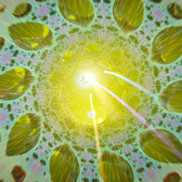
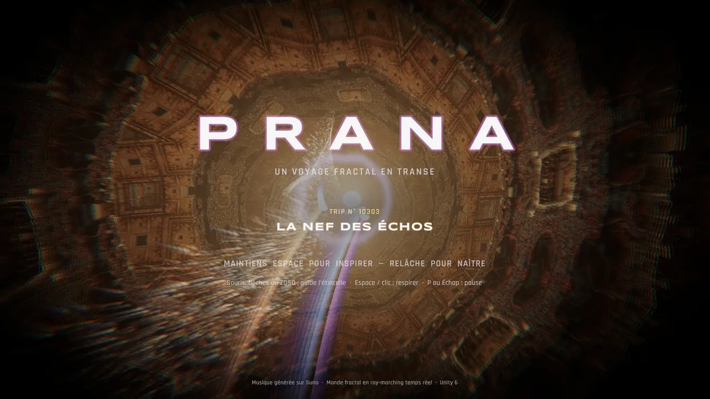
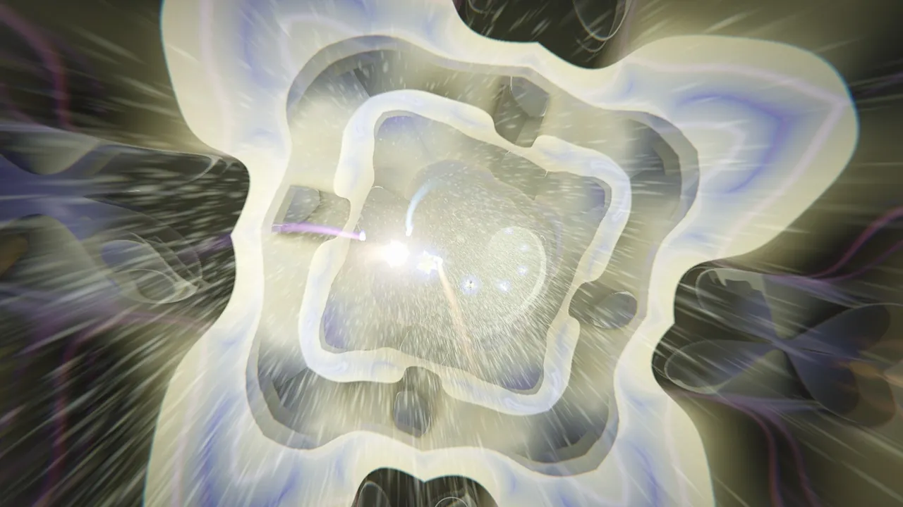
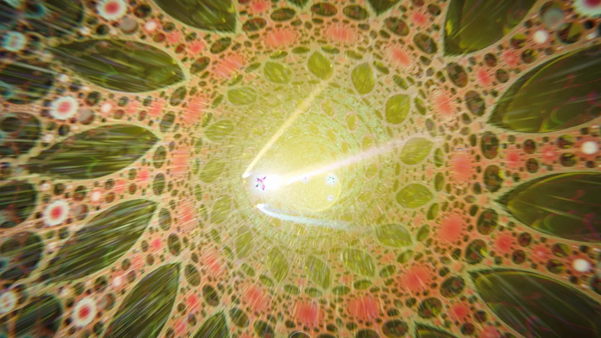

PranaUn voyage fractal en transe
Tu es une étincelle de souffle. Tu traverses des royaumes fractals qui se contractent quand tu inspires et explosent quand tu expires, sur une psytrance mixée en direct par un DJ automatique. Chaque partie est un trip différent, et il s'étire tant que tu restes dans le flux.
Images du jeu, tout est calculé en temps réel.
Version 1.0 · 9 novembre 2026
Mac Apple Silicon ou Intel, macOS 12 ou plus récent · 81 Mo.
Android 10 ou plus récent, téléphone 64 bits avec Vulkan (la plupart des téléphones récents) · 73 Mo. Se joue à l'horizontale.
Android : ajouter à F-DroidPour recevoir les mises à jour toutes seules : ajoute le dépôt 9mp dans F-Droid (ou Droid-ify, Neo Store…), puis cherche « PRANA ». Dépôt : fdroid.9mp.org.
Attention, photosensibilité. Flashs lumineux, couleurs saturées et motifs qui défilent vite : déconseillé aux personnes sujettes à l'épilepsie photosensible. Arrête si tu ressens un malaise.
Le voyage



- Recueille les graines de lumière. Elles sont posées sur le rythme : les attraper, c'est jouer en mesure. Les graines d'or valent 5, les séries s'enchaînent.
- Respire. Maintiens pour inspirer : le monde se contracte, les graines viennent à toi, la basse s'efface. Relâche pour expirer : une onde balaie la fractale et la musique revient. Expire sur le temps pour une Résonance, au moment d'un drop pour une Floraison.
- Chaque partie est un trip. Un nom, dix actes (envol, montées, pics, plateaux, descente), un royaume fractal par acte et une musique assemblée en direct à partir des pistes séparées (batterie, basse, mélodie).
- Le trip s'étire. Pendant un pic, si tu as recueilli les trois quarts des graines, le pic se prolonge d'une phrase dans une version plus profonde du royaume. Un trip dure de 5 minutes et demie à 9 minutes.
Les commandes
- Clavier et souris
- Guider : souris, flèches ou ZQSD
- Respirer : Espace ou clic gauche, maintenu
- Pause : P ou Échap
- Quitter : Échap sur l'écran titre
- Manette
- Guider : stick gauche
- Respirer : A (Croix) ou gâchette droite
- Pause : Start
- Au doigt (Android)
- Guider : le pouce gauche glisse
- Respirer : le pouce droit reste appuyé
- Pause : toucher le haut de l'écran, ou Retour
Avec un casque, c'est mieux : la musique et le souffle font la moitié du voyage.
L'installer sur Mac
- Ouvre le zip et glisse PRANA dans le dossier Applications.
- Au premier lancement, macOS refuse de l'ouvrir : l'app n'est pas notarisée par Apple. Va dans Réglages Système → Confidentialité et sécurité, puis clique sur « Ouvrir quand même » en bas de la page. Ou, dans le Terminal :
xattr -dr com.apple.quarantine /Applications/PRANA.app - Le jeu s'ouvre en plein écran ; la qualité d'image s'ajuste toute seule à la puissance du Mac.
L'installer sur Android
- Télécharge l'APK depuis le téléphone, puis ouvre-la.
- Android demande d'autoriser ton navigateur à installer des applications : accepte, puis Installer. Si Play Protect propose d'analyser l'app, laisse-le faire.
- Pour les mises à jour, passe par F-Droid : c'est la même app, signée par le même dépôt, elle se met à jour sans réinstaller.
À savoir
- Pas de pub, pas de compte. Sur Android, l'app ne demande aucune permission, pas même l'accès à Internet.
- Sur Mac, pas de mise à jour automatique : reviens sur cette page pour la dernière version.
- La musique : deux prises de « Fractal Breath », générées sur Suno, séparées en pistes avec Demucs et remixées à chaque partie par le DJ du jeu, toujours à 145 BPM.
- Aucun modèle 3D ni texture : la fractale, les particules, les cristaux et la lumière sont calculés en temps réel (Unity 6).